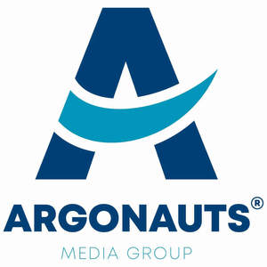

Trade Mark Journal No.2025/011 14 March 2025
UK00004162507 19 February 2025 (35)

- Class 35
- Business advice relating to strategic marketing; Business advice; Business advice relating to advertising; Business advice relating to marketing; Marketing (Business advice relating to -); Business organisation advice; Business advice and consultancy relating to franchising; Information or enquiries on business and marketing; Providing advice and information relating to commercial business management; Providing advice in the field of business management and marketing; Advice and information concerning commercial business management; Business advice relating to marketing management consultations; Advice relating to business organisation; Counselling on business matters; Business management advice; Providing business efficiency advice; Business advice relating to franchising; Franchising (Business advice relating to -); Consumers (Commercial information and advice for -) [consumer advice shop]; Commercial information and advice for consumers [consumer advice shop]; Advice for consumers (Commercial information and -) [consumer advice shop]; Advice relating to business management; Business management advice relating to manufacturing business; Marketing advice; Business efficiency advice; Advice relating to business organization; Business management advice and assistance; Business advice relating to financial re-organisation; Assistance to industrial or commercial enterprises in the running of their business; Business advice relating to restaurant franchising; Business advice relating to mergers; Advice relating to the organisation and management of business; Business organization advice; Business mergers (Advice relating to -); Advice in the field of business management and marketing; Business advice relating to accounting; Assistance and advice regarding business organisation and management; Advice on tax preparation; Management on behalf of industrial and commercial enterprises in terms of supplying them with office requisites; Business advice relating to disposals; Assistance and advice regarding business management; Advising commercial enterprises in the conduct of their business; Assistance, advisory services and consultancy with regard to business planning; Business advisory services relating to the running of restaurants; Providing advice relating to the organisation and management of businesses; Business acquisitions (Advice relating to -); Business advice relating to acquisitions; Advice relating to the business management of fitness clubs; Assistance to commercial enterprises in the management of their business; Advisory services relating to business planning; Advice relating to the business operation of fitness clubs; Advice relating to the sale of businesses; Advisory services relating to the purchase of goods on behalf of business; Advice relating to the business management of health clubs; Advice relating to the business operation of health clubs; Advising industrial enterprises in the conduct of their business; Assistance and advice regarding business organization; Business management of insurance agencies and brokers on an outsourcing basis; Business advice relating to growth financing; Consultancy relating to business planning; Provision of business advice relating to franchising; Professional business consultation relating to the setting up of businesses; Assistance and advice regarding business organization and management; Providing business management and operational assistance to commercial businesses; Business strategic planning services; Advice relating to marketing management; Business advisory services relating to the setting up of restaurants; Consultancy services regarding business strategies; Presentation of financial products on communication media, for retail purposes; Advisory services relating to commercial planning; Marketing management advice; Consultancy relating to business advertising; Business management advisory services relating to industrial enterprises; Career information and advisory services (other than educational and training advice); Help in the management of business affairs or commercial functions of an industrial or commercial enterprise; Business administration services for processing sales made on the internet; Business administration services for the processing of sales made on the Internet; Business planning consultancy; Advisory services (Business -) relating to the management of businesses; Providing business marketing information; Commercial assistance in business management; Franchising (Business advisory services relating to -); Business advisory services relating to franchising; Assistance, advisory services and consultancy with regard to business management; Information and expert opinions relating to companies and business; Consultancy regarding business organisation and business economics; Business strategy and planning services; Professional business consultation relating to the operation of businesses; Business advisory services relating to the running of sandwich bars; Assistance to industrial enterprises in the conduct of their business; Assistance with business planning; Advice relating to the acquisition of businesses; Assistance, advisory services and consultancy with regard to business analysis; Providing advice relating to the marketing of chemical products; Business advice, inquiries or information; Business management assistance for industrial or commercial companies; Strategic business consultancy; Business consultation relating to advertising; Consultations relating to business advertising; Assistance to management in commercial enterprises in respect of advertising; Assistance, advisory services and consultancy with regard to business organization; Business advisory services relating to business liquidations; Business marketing consulting services; Providing information about commercial business and commercial information via the global computer network; Management assistance for promoting business; Advisory services (Business -) relating to the management of public sector businesses; Business planning services for enterprises; Professional consultancy relating to business management; Professional consultancy relating to marketing; Consultancy and advisory services in the field of business strategy; Business supervision [on behalf of others]; Business management advisory services relating to franchising; Business consultancy services relating to the marketing of fund raising campaigns; Advisory services relating to business organisation; Provision of advice relating to marketing; Business planning services; Career advisory services (other than education and training advice); Commercial information and advice services for consumers in the field of make-up products.
MARIUSZ BINIAK